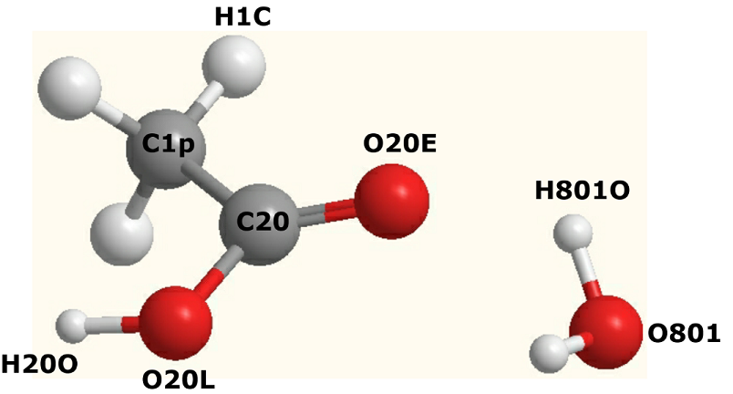

Simulating a solution¶
Version 1.0, last update: April 2020 Chin Yong, Computation Chemistry Group, Daresbury Laboratory
Overview
This exercise will show you how to set up a solution model. If you are not familiar how to run DL_FIELD and DL_ANALYSER, see the general guidance of running the program.
Aims
- To simulate a solution of ethanoic acid (0.2 M concentration in water) at 300 K in a cubic box of size 60x60x60 angstroms. It’s a fully atomistic model with flexible bonds.
- Ethanoic acid is the solute and water is the solvent. We intend to determine the packing of water molecules around ethanoic acid using radial distribution functions.
Tools
- DL_FIELD – force field model set up (version 4.6 and above).
- DL_POLY – molecular dynamics simulations (version 3 and above).
- DL_ANALYSER – results analysis (version 2.1 and above).
Note
If you are interested only in using DL_ANALYSER, go straight to Section 3. A HISTORY trajectory file is supplied for your convenience.
This is an exercise in simulating a box of liquid ethanoic acid from preparing the model and system set-up parameters, through running a molecular dynamics simulation, to analysing the results.
Ethanoic acid and water molecules, with DL_F Notation labels